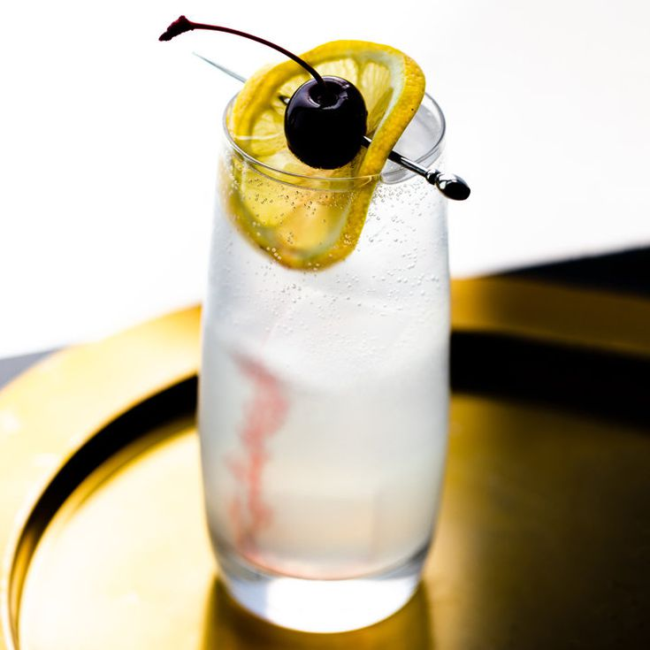

Tom Collins

Description
Created in the late 1800s, the Tom Collins is said to be named after a wide-spread practical joke that swept the country. This cocktail, however, is no joke.
Ingredients
- 1 ½ cups ice
- 2 fluid ounces gin
- ¾ fluid ounce lemon juice
- ½ fluid ounce simple syrup
- 1 cup ice
- 2 fluid ounces club soda
- 1 lemon wedge
Steps
- Fill a Collins glass with 1 1/2 cups ice, set aside in the freezer. Combine gin, lemon juice, and simple syrup in a cocktail shaker. Add 1 cup ice, cover and shake until chilled. Strain into the chilled Collins glass.
- Top with club soda and garnish with a lemon wedge.